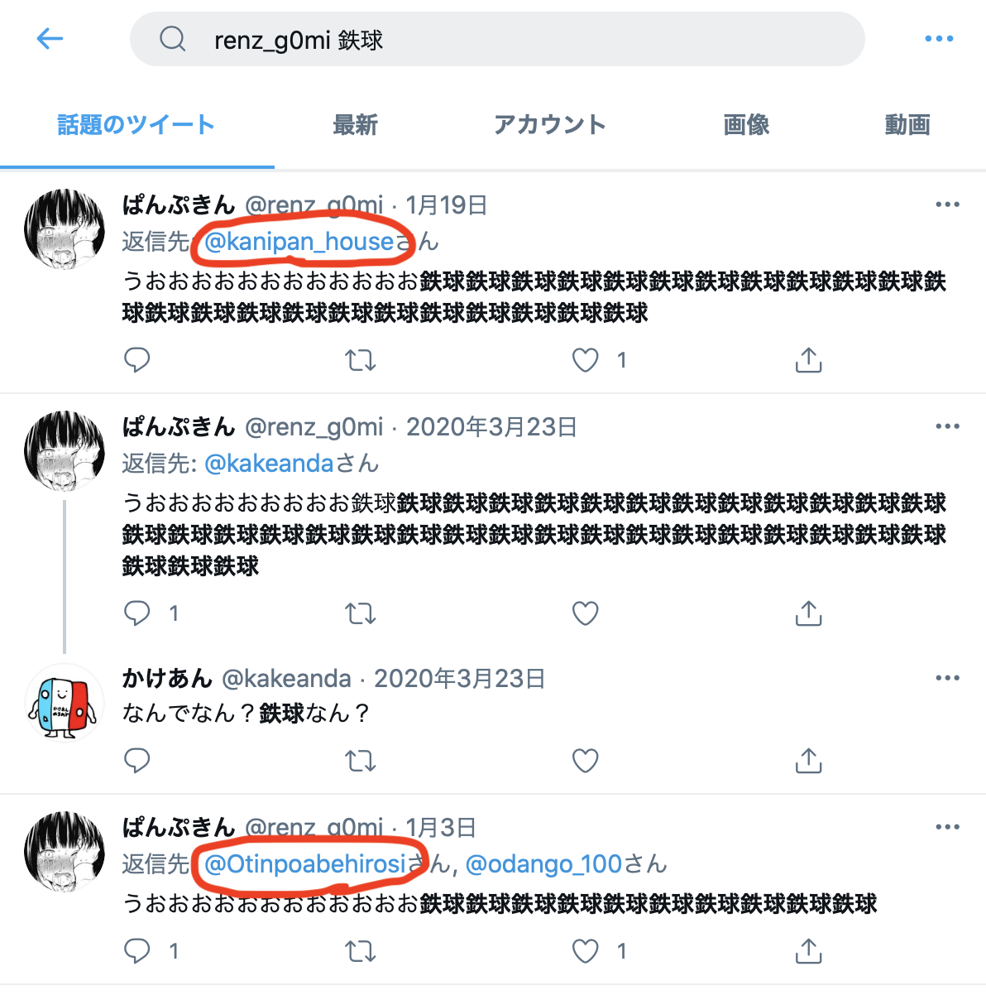
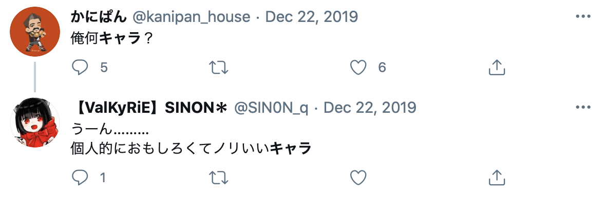

Twitterで公開しようと思っていましたが、あまりにも長くなってしまったのでここで公開します。最初に言いますが、りくとの正体は本当にどうでもいい面白くない結果だったので期待しないでください。時系列で説明していきます。
りくと誕生
1/3頃にスタシュ勢が誰も知らない「りくと(@Otinpoabehirosi ※今はアカウントは消えています)」という人が「陰キャ」という公開リストを作成しました。そのリストにはスタシュをやっている人が数十人入れられました。リストに入れられた人には通知が届きます。無反応の人も多いですが、りくとに対してお前の方が陰キャだと言ってレスバが始まったり、誰かのサブ垢なんじゃないかと言ったりして話題になりました。

調査開始
僕も単純に正体が気になったので1/6からりくとについて調べ始めました。スタシュ勢の誰かのサブ垢だろうと思ってりくとのフォロー、フォロワー、いいね欄などをチェックしました。りくとは公開陰キャリストを作る前にツイートやリプを全部削除していたので結局正体はわかりませんでした。
少女の反撃
次の日の1/7、不毛なレスバがまだまだ繰り広げられる中で「りんちゃん」というスタシュ勢が嫌がらせをしようとりくとにURLを貼ったリプを送り付けました。そのURLは最初に踏んだ人のIPアドレスと大体の住んでる場所などの情報を取得できるものでした。りんちゃんはそれを使ってりくとの情報を得られたと思い、IPアドレスと大体の住所の画像をツイートしました。画像には
IPアドレス
熊本県の細かい緯度と経度
PC(Windows)からのアクセス
という情報が載っていました。これがりくとである可能性もありますが他の人が踏んだ可能性も十分あります。
周囲の反応
りくとはその手法知ってますwと言い、画像の場所は全く知らない、県がまず違う、URLを最初に踏んだのは他の人であると言いました。
りんちゃんのツイートは波紋を呼びスタシュ勢は、流石にそれはまずい、消した方が良いと言いました。その後、僕はこの騒動に気がつきました。特定されたIPアドレスは誰かのものではあるので誰のものだろうと気になりました。
りくとの焦り
URLを踏んだ人はスタシュ勢かりくと界隈にいる人だと推測はできます。りくと界隈というのはもともと彼のフォロー、フォロワーにいる人たちを指します。りくとのプロフィールを覗くと1/6に見た時、フォロー13人、フォロワー15人くらいだったのが次の日の1/7にはフォロー10人、フォロワー11人になっていました。もともと誰がフォロー、フォロワーだったかは把握していたので詳細を見ると明らかにりくと界隈の身内をブロ解かブロックしてたことが分かりました。何か隠そうとしているなと感じました。
分析１
ここで一つ面白いことを思いつきました。夏休みに趣味でスタシュの攻略サイトを作ろうとキャラランキングを載せたページを作りました。そこからは飽きて何もいじってませんが、1人/1日くらいの人が今でも訪れてくれます。Google Analyticsでサイトに訪れた人の情報を見ることができるので、そのサイトにりんちゃんが特定した人と同じ人が訪れてないかを調べてみようと思いました。（※Google Analyticsはもちろん合法なのでIPアドレスの取得や個人特定はできません。）すると1/3に熊本からの新規ユーザー（初めてサイトに訪れる）のPC(Windows)からのアクセスを見つけました。サイトに訪れる人はスマホまたはタブレットからのアクセスが多いのでPCからは珍しいです。このユーザーがりんちゃんのURLを踏んだ人と同一人物なのはほぼ確定です。
分析２
あと、サイトに訪れる方法はOrganic searchとDirectの二種類あります。前者は検索して出てきた結果からサイトに訪れる方法で、後者はどこかのリンクから直接サイトに飛ぶ方法です。そのユーザーからのアクセスはDirectだったので僕のTwitterのプロフィールのURL経由であると分かりました。つまり最近スタシュをやり始めて追いこみますwのプロフィールからサイトに飛んだと予想できました。しかしここで手詰まりです。匿名の誰かの行動は追えましたがその誰かがわかりません。
特定
ここでもっと低次元で簡単な方法を思いつきました。りくと界隈の人や最近スタシュを始めた人でTwitter Web App（PCからのツイート）の人がいないか探しました。するとそれっぽい人は何人か見つかりましたが確固たる証拠とは言えません。最後にTwitter検索です。候補に上がった人のTwitterID＋熊本とか九州とかで検索します。すると確実に1人に絞られました。その人はそもそも熊本在住だとTwitterで明かしていました。
特定された人
答えはかにぱん @kanipan_house です。誰？って感じだと思いますが、りくと界隈の人です。りくとがブロックかブロ解する前はりくとのフォロワーでした。Twitterで
「@kanipan_house 熊本」
と検索してみてください。彼が熊本に住んでいることが分かります。最近のツイートからも分かるように普通に熊本在住を公言しています。あとちゃんとTwitter Web Appになっています。さらに彼のツイートのメディアを見るとスタシュの動画を1/2にあげてるのが分かります。1/3に追いこみますwのプロフィールに貼ってあるリンクからサイトに飛んだのも辻褄が合います。
ブロックの謎
りくとは自分の身内がリンクを最初に踏んだ可能性を考えて、もしくは踏んだと知ってそれを隠すために身内をブロックしたのかなと思いました。つまり、りくとが身内をブロックすることでスタシュ界隈の人は彼の身内を見つけ辛くなるため身内を守ることができます。(しかし、この考察は後に間違いだと判明します。)
単純な特定方法
結果的に攻略サイトのGoogle Analyticsなんか使わなくても、りくとの所属する界隈の人の「TwitterID＋熊本」とかで検索するだけで良かったという誰でも簡単にできる特定方法でした。ただGoogle Analyticsの情報は信憑性を少し上げる証拠にはなります。
晒し
特定されたのが誰なのかが分かった僕は「りんちゃんの特定した人が誰か分かった」、「りくとではない」とツイートしました。他のスタシュ勢もりんちゃんのツイートは流石にまずいと言って最終的にりんちゃんはツイートを削除しました。りくとは「りんちゃんのことを誤った住所を特定してツイ消しした面白いイタい可哀想な陰キャ」として晒しました。りくとは「いや一番可哀想なのは特定された人か」とも言っていました。その後もレスバは度々続きます。

消えたりくと
僕は忙しくてあまり見れてなかったのですが、1/23頃にりくとは「飽きたんで一週間したら垢消しします俺の正体はもうすぐばれそう」とツイートしていました。僕は「正体」というものがあるのかと気になりました。つまり、りくとの別のTwitterアカウントが存在してそれを見つけることが可能だということです。てっきりりくと自体本垢で彼の界隈の人とDiscordとかで繋がっていてあんまりTwitterは使っていないのかと思っていました。正体があるならそれが誰か気になりました。りくと界隈の中の誰かだと見当はつくのですが何が証拠となるのか、どうやって見つけたらいいかはわかりませんでした。２月に入ってTwitterを見るとりくとは本当にアカウントを消していました。消えられると余計誰だったのか気になりました。
再調査
調べだすとひょっとしてこの人りくとかもという人を見つけ、証拠を集めだすとどんどん出てきて確信に変わりました。りくとの正体はかにぱん @kanipan_houseでした。さっき出てきましたが、かにぱんはりんちゃんにIPアドレスや大体の住んでいる場所を特定された人です。りくととかにぱんは同一人物です。つまり、りくとはりんちゃんに特定されていました。以下りくと＝かにぱんである証拠を上げていきます。
証拠１
りくとが使っているデバイスについて
りくとがツイートするデバイスは特徴的です。ほとんどのツイートはTwitter Web AppつまりPCからのツイートですが、ごく稀にAndroidのスマホからのツイートがあります。このツイートの習性と一致する人はなかなかいませんが、かにぱんは見事に一致しています。(かなり昔のツイートは異なります) かにぱんのPCからのツイートはたくさんあるのでここでは載せませんが確かめたい人は実際に見に行ってください。かにぱん @kanipan_house
↑少ないAndroidからのツイート(上2枚スルースキルについて)
証拠２
同時期にドスパラのなんかに応募してます。
証拠３
りくとに対するリプです。ぱんぷきんというりくと界隈の人が1/3にりくととスタシュ勢のだんごくんとのやり取りに茶々を入れていました。かにぱんにも同じようなリプを送っています。ちなみにりくと界隈のかけあんにも同様のリプが送られていますが彼はりくとではありません。彼はりくと(かにぱん)の友達です。

証拠４
りくとがりんちゃんに特定された後、身内(+自分の本垢)をブロックしたのは自己防衛でした。
証拠５
これは証拠というより僕の証言なので信じてもらえないかもしれませんが、かにぱんはりくとと同じ人をフォローしていました。画像はかにぱんとりくとのフォローで共通している人です。りくと(かにぱん)界隈の他の人とは違っていそうな人をピックアップしています。(Pepsiは他の人もフォローしてた)うろ覚えがあるかも。
かにぱんは、りくとのフォロワーでしたがりくとは、かにぱんをフォローしていませんでした。他のりくと界隈の人たちはりくとと相互フォローの関係でしたが、かにぱんだけ一方的なフォローでした。あともちろん同一人物なのでかにぱんとりくと間のリプのやり取りはありません。
証拠６
りくと-かにぱん間の特殊な関係について
りくとの煽りツイートにはりくと界隈の人(ぱんぷきん、かけあんなど)からのいいねがよくついていました。しかし、かにぱんはりくとのツイートにいいねを押していませんでした。自分で自分のツイートをいいねするのは変だからでしょう。かにぱんは、りくとのフォロワーでしたがりくとは、かにぱんをフォローしていませんでした。他のりくと界隈の人たちはりくとと相互フォローの関係でしたが、かにぱんだけ一方的なフォローでした。あともちろん同一人物なのでかにぱんとりくと間のリプのやり取りはありません。
証拠７
かにぱんも公開リスト作りがち
証拠８
その他もろもろ
スタシュに対するネガティブな発言
(1/3でリスト作成日と同日)
ツイート消し癖

「お」ちんぽあべひろし

(1/3でリスト作成日と同日)
Q&A
Q. 何でりくとを調べ始めたんですか？
A.「ふざけんな！！誰が陰キャだ！💢許さん👊😠」と思ったからです。
Q. 細かく調べすぎじゃないですか？キモいです。
A. 元々は公開するつもりなかったので流石にここまで調べてませんでした。しかし、知りたいという人が多く、僕が嘘をついていないことを証明するためにも公開するとなると間違えたら迷惑なので念入りに調べました。